20. تطبيق ويب MVC في بنية ثلاثية الطبقات – المثال 6، SQL Server Express
20.1. قاعدة بيانات SQL Server Express
في هذا الإصدار، سنقوم بتخزين قائمة الأشخاص في جدول قاعدة بيانات SQL Server Express 2005 متاح على الرابط [http://msdn.microsoft.com/vstudio/express/sql/]. اللقطات التالية مأخوذة من عميل EMS Manager Lite لـ SQL Server Express [http://www.sqlmanager.net/fr/products/mssql/manager]، وهو عميل إدارة مجاني لنظام إدارة قواعد البيانات SQL Server Express.
تسمى قاعدة البيانات [dbpersonnes]. وهي تحتوي على جدول يسمى [PERSONNES]:
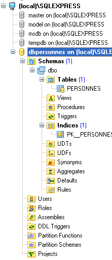
سيحتوي جدول [PERSONNES] على قائمة بالأشخاص الذين يديرهم تطبيق الويب. وقد تم إنشاؤه باستخدام عبارات SQL التالية:
- السطر 2: المفتاح الأساسي [ID] من نوع عدد صحيح. تشير السمة IDENTITY إلى أنه في حالة إدراج صف دون قيمة لعمود ID في الجدول، سيقوم SQL Express بإنشاء عدد صحيح لهذا العمود بنفسه. في IDENTITY(1, 1)، المعلمة الأولى هي أول قيمة ممكنة للمفتاح الأساسي، والثانية هي الزيادة المستخدمة في إنشاء الأرقام.
قد يحتوي الجدول [PERSONS] على المحتوى التالي:
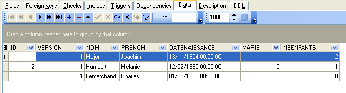
نعلم أنه عند إدراج كائن [Person] عبر طبقة [DAO] الخاصة بنا، يكون حقل [id] لهذا الكائن مساوياً لـ -1 قبل الإدراج ويكون له قيمة غير -1 بعد ذلك؛ وهذه القيمة هي المفتاح الأساسي المخصص للصف الجديد الذي تم إدراجه في جدول [PERSONNES]. دعونا نلقي نظرة على مثال لنرى كيف يمكننا تحديد هذه القيمة.
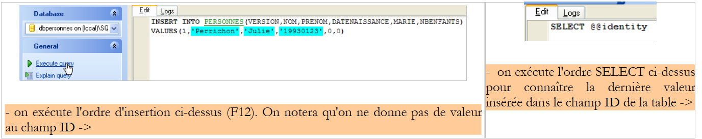 |
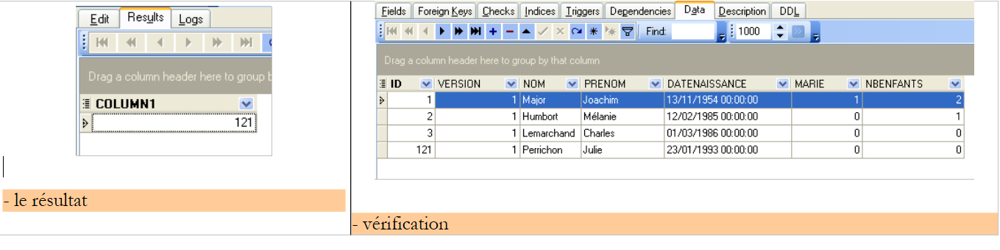 |
عبارة SQL
آخر قيمة تم إدراجها في حقل ID بالجدول. ويجب تنفيذه بعد الإدراج. وهذا يختلف عن أنظمة إدارة قواعد البيانات [Firebird] و[Postgres]، حيث يتم الاستعلام عن قيمة المفتاح الأساسي للسجل المضاف قبل الإدراج، ولكنه مشابه لتوليد المفتاح الأساسي في نظام إدارة قواعد البيانات MySQL. سنستخدمه في ملف [people-sqlexpress.xml]، الذي يحتوي على عبارات SQL التي يتم تنفيذها على قاعدة البيانات.
20.2. مشروع Eclipse لطبقات [DAO] و[service]
لتطوير طبقات [DAO] و[service] لتطبيقنا باستخدام قاعدة بيانات [SQL Server Express]، سنستخدم مشروع Eclipse التالي [mvc-personnes-06]:
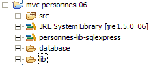
المشروع هو مشروع Java بسيط، وليس مشروع ويب Tomcat.
مجلد [src]
يحتوي هذا المجلد على شفرة المصدر لطبقات [dao] و[service]:
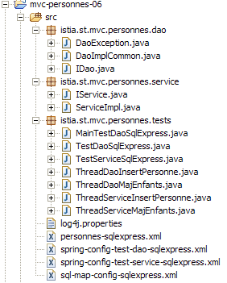
قد تكون جميع الملفات التي تحتوي على [sqlexpress] في أسمائها قد تم تعديلها أو لم يتم تعديلها مقارنة بإصدارات Firebird و Postgres و MySQL. وفيما يلي، نصف فقط تلك التي تم تعديلها.
مجلد [database]
يحتوي هذا المجلد على البرنامج النصي لإنشاء قاعدة بيانات SQL Express للأشخاص:

مجلد [lib]
يحتوي هذا المجلد على الأرشيفات التي يحتاجها التطبيق:
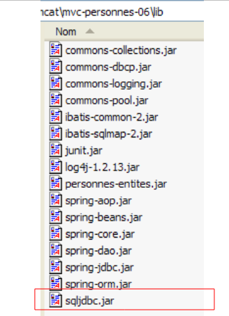 |
لاحظ وجود برنامج تشغيل JDBC [sqljdbc.jar] لنظام إدارة قواعد البيانات [SQL Server Express]. جميع هذه الملفات جزء من مسار فئات مشروع Eclipse.
20.3. طبقة [DAO]
طبقة [dao] هي كما يلي:
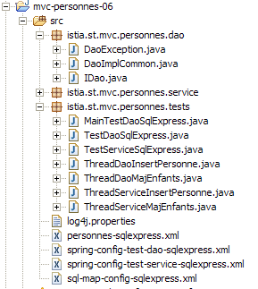
نحن نسلط الضوء فقط على التغييرات التي طرأت منذ إصدار [Firebird].
ملف التعيين [personne-sqlexpress.xml] هو كما يلي:
<?xml version="1.0" encoding="UTF-8" ?>
<!DOCTYPE sqlMap
PUBLIC "-//iBATIS.com//DTD SQL Map 2.0//EN"
"http://www.ibatis.com/dtd/sql-map-2.dtd">
<sqlMap>
<!-- alias class [Person] -->
<typeAlias alias="Personne.classe"
type="istia.st.mvc.personnes.entites.Personne"/>
<!-- mapping table [PERSONNES] - object [Person] -->
<resultMap id="Personne.map"
class="istia.st.mvc.personnes.entites.Personne">
<result property="id" column="ID" />
<result property="version" column="VERSION" />
<result property="nom" column="NOM"/>
<result property="prenom" column="PRENOM"/>
<result property="dateNaissance" column="DATENAISSANCE"/>
<result property="marie" column="MARIE"/>
<result property="nbEnfants" column="NBENFANTS"/>
</resultMap>
<!-- list of all persons -->
<select id="Personne.getAll" resultMap="Personne.map" > select ID, VERSION, NOM,
PRENOM, DATENAISSANCE, MARIE, NBENFANTS FROM PERSONNES</select>
<!-- get a specific person -->
<select id="Personne.getOne" resultMap="Personne.map" >select ID, VERSION, NOM,
PRENOM, DATENAISSANCE, MARIE, NBENFANTS FROM PERSONNES WHERE ID=#value#</select>
<!-- add a person -->
<insert id="Personne.insertOne" parameterClass="Personne.classe">
insert into
PERSONNES(VERSION, NOM, PRENOM, DATENAISSANCE, MARIE, NBENFANTS)
VALUES(#version#, #nom#, #prenom#, #dateNaissance#, #marie#,
#nbEnfants#)
<selectKey keyProperty="id">
select @@IDENTITY as value
</selectKey>
</insert>
<!-- update a person -->
<update id="Personne.updateOne" parameterClass="Personne.classe"> update
PERSONNES set VERSION=#version#+1, NOM=#nom#, PRENOM=#prenom#, DATENAISSANCE=#dateNaissance#,
MARIE=#marie#, NBENFANTS=#nbEnfants# WHERE ID=#id# and
VERSION=#version#</update>
<!-- delete a person -->
<delete id="Personne.deleteOne" parameterClass="int"> delete FROM PERSONNES WHERE
ID=#value# </delete>
<!-- obtain the value of the primary key [id] of the last person inserted -->
<select id="Personne.getNextId" resultClass="int">select
LAST_INSERT_ID()</select>
</sqlMap>
هذا هو نفس محتوى [people-firebird.xml] مع الاختلافات الطفيفة التالية:
- تم تغيير عبارة SQL "Person.insertOne" في الأسطر 29–37:
- يتم تنفيذ عبارة الإدراج SQL قبل عبارة SELECT، التي تسترد قيمة المفتاح الأساسي للصف الذي تم إدراجه
- لا يحدد أمر الإدراج SQL قيمة لعمود ID في جدول [PERSONNES]
وهذا يعكس مثال الإدراج الذي ناقشناه في القسم 20.1. لاحظ أن مشكلة عمليات الإدراج المتزامنة بواسطة خيوط مختلفة، الموصوفة لـ MySQL في القسم 19.3، موجودة هنا أيضًا.
فئة التنفيذ [DaoImplCommon] لطبقة [dao] هي نفسها الموجودة في الإصدارات الثلاثة السابقة.
تم تكييف تكوين طبقة [dao] مع نظام إدارة قواعد البيانات [SQL Express]. وبالتالي، فإن ملف التكوين [spring-config-test-dao-sqlexpress.xml] هو كما يلي:
<?xml version="1.0" encoding="ISO_8859-1"?>
<!DOCTYPE beans SYSTEM "http://www.springframework.org/dtd/spring-beans.dtd">
<beans>
<!-- data source DBCP -->
<bean id="dataSource" class="org.apache.commons.dbcp.BasicDataSource"
destroy-method="close">
<property name="driverClassName">
<value>com.microsoft.sqlserver.jdbc.SQLServerDriver</value>
</property>
<property name="url">
<value>jdbc:sqlserver://localhost\\SQLEXPRESS:4000;databaseName=dbpersonnes</value>
</property>
<property name="username">
<value>sa</value>
</property>
<property name="password">
<value>msde</value>
</property>
</bean>
<!-- SqlMapCllient -->
<bean id="sqlMapClient"
class="org.springframework.orm.ibatis.SqlMapClientFactoryBean">
<property name="dataSource">
<ref local="dataSource"/>
</property>
<property name="configLocation">
<value>classpath:sql-map-config-sqlexpress.xml</value>
</property>
</bean>
<!-- the [dao] layer access classes -->
<bean id="dao" class="istia.st.mvc.personnes.dao.DaoImplCommon">
<property name="sqlMapClient">
<ref local="sqlMapClient"/>
</property>
</bean>
</beans>
- الأسطر 5-19: يشير عنصر [dataSource] الآن إلى قاعدة البيانات [dbpersonnes] في [SQL Express]، التي يديرها [sa] بكلمة مرور [msde]. يجب على القارئ تعديل هذا التكوين وفقًا لبيئته الخاصة.
- السطر 31: فئة [DaoImplCommon] هي فئة التنفيذ لطبقة [dao]
السطر 11 يتطلب بعض التوضيح:
<value>jdbc:sqlserver://localhost\\SQLEXPRESS:4000;databaseName=dbpersonnes</value>
- //localhost: يشير إلى أن خادم SQL Express موجود على نفس الجهاز الذي يعمل عليه تطبيق Java الخاص بنا
- \\SQLEXPRESS: هو اسم مثيل SQL Server. يبدو أنه يمكن تشغيل عدة مثيلات في وقت واحد. لذلك من المنطقي تسمية المثيل المحدد الذي يتم التعامل معه. يمكن الحصول على هذا الاسم باستخدام [SQL Server Configuration Manager]، الذي يتم تثبيته عادةً جنبًا إلى جنب مع SQL Express:
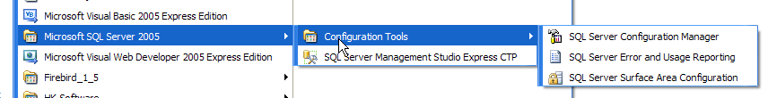
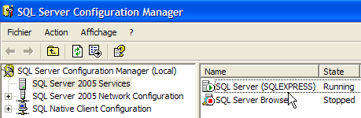
- 4000: منفذ الاستماع لـ SQL Express. يعتمد هذا على تكوين الخادم. بشكل افتراضي، يستخدم منافذ ديناميكية، والتي لا تُعرف مسبقًا. في هذه الحالة، لا يتم تحديد أي منفذ في عنوان URL الخاص بـ JDBC. هنا، استخدمنا منفذًا ثابتًا، وهو المنفذ 4000. يتم تعيين هذا عبر التكوين:
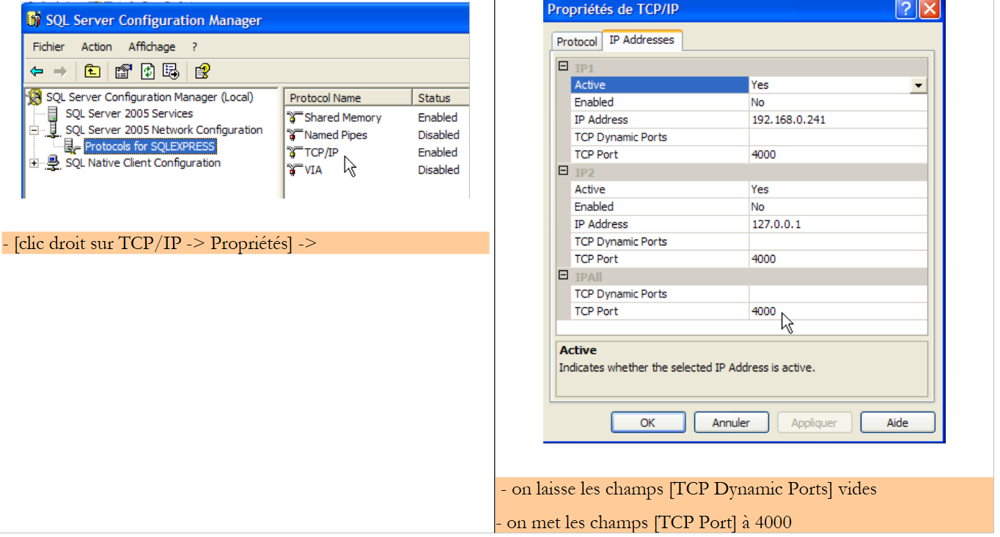 |
- تحدد السمة dataBaseName قاعدة البيانات التي تريد العمل معها. هذه هي القاعدة التي تم إنشاؤها باستخدام عميل EMS:
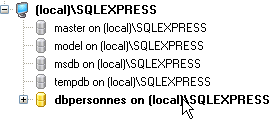
بعد إجراء هذه التغييرات، يمكننا الانتقال إلى مرحلة الاختبار.
20.4. اختبارات طبقات [dao] و [service]
اختبارات طبقات [dao] و[service] هي نفسها المستخدمة في إصدار [Firebird]. النتائج التي تم الحصول عليها هي كما يلي:
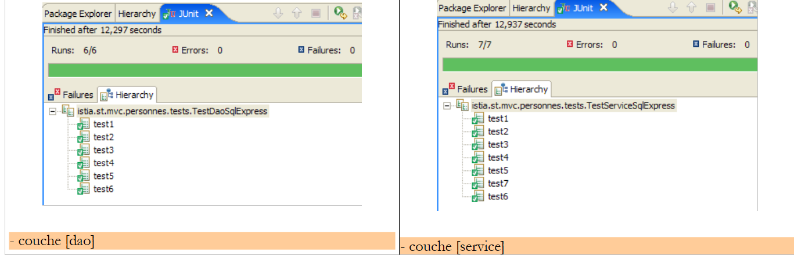 |
يمكننا أن نرى أن الاختبارات نجحت مع تطبيق [DaoImplCommon]. لن نحتاج إلى اشتقاق هذه الفئة، كما كان ضروريًا مع نظام إدارة قواعد البيانات [Firebird].
20.5. اختبارات تطبيق [Web]
لاختبار تطبيق الويب باستخدام نظام إدارة قواعد البيانات [SQL Server Express]، نقوم بإنشاء مشروع Eclipse [mvc-personnes-06B] بطريقة مشابهة لتلك المستخدمة في إنشاء مشاريع الويب السابقة.
نقوم بنشر مشروع الويب [mvc-personnes-05B] داخل Tomcat:
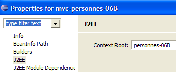 | 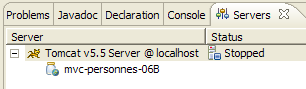 |
يتم تشغيل نظام إدارة قواعد البيانات SQL Server Express. ويكون محتوى الجدول [PERSONNES] كما يلي:
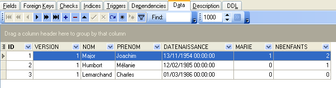
ثم يتم تشغيل Tomcat. باستخدام متصفح، نطلب عنوان URL [http://localhost:8080/mvc-personnes-06B]:
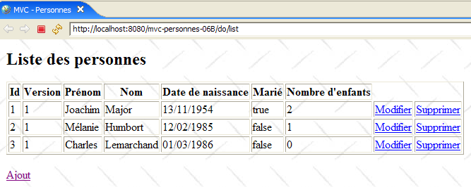
نقوم بإضافة شخصًا جديدًا باستخدام رابط [Add]:
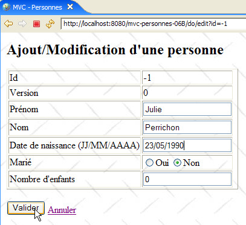 | 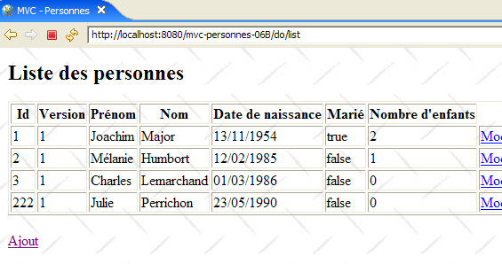 |
نتحقق من الإضافة في قاعدة البيانات:
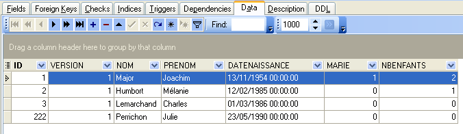
ندعو القارئ إلى إجراء اختبارات أخرى [تحرير، حذف].